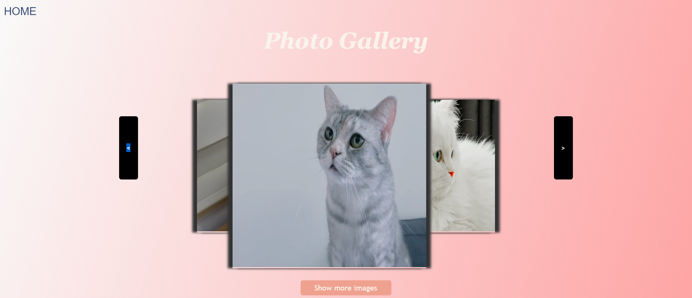

Photo Gallery
This project is a completed past project, a photo gallery using HTML, css, and JavaScript. Multiple photos are viewed by clicking the arrow button. If you press the picture, you can see it bigger in a new window and save it by pressing the add to favorite button. The maximum number of preferred photos is 5.
Questionnarie
This project is a completed project and is designed for the students of Centennial College to evaluate the coures and instructors. As a questionnaire-type website created using HTML and css, and commands such as form, input type = "radio" and textarea used. You can initialize the answers you typed by pressing the Reset button.
Express Portfolio Site
This project is an ongoing project and is still incomplete. The project is called Express Portfolio Site, which consists of the main home page, About Me introducing myself, project page which is introducing completed projects or ongoing projects, service page introducing services to be provided, and contact page.